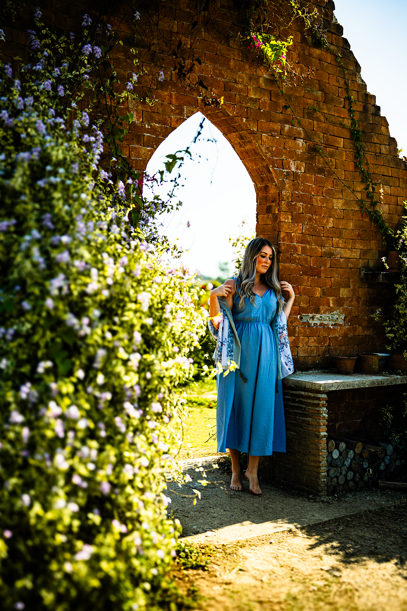

Kontakt
Om meg
Prosjekter
Film plakat
Kort beskrivelse av prosjektet og teknologier brukt.
Portrett intervju
Kort beskrivelse av prosjektet og teknologier brukt.

Øve oppgaver
Kort beskrivelse av prosjektet og teknologier brukt.